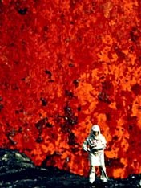
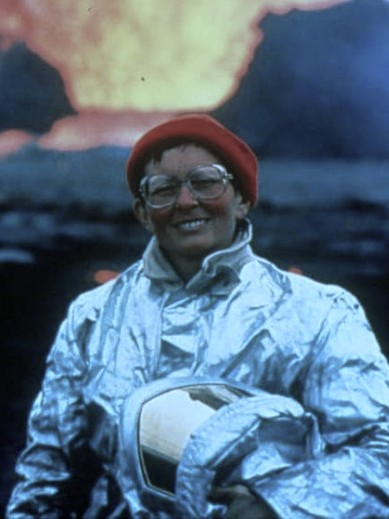

Fotografías Vulcanológicas

Katia Krafft
Dedicó su vida a estudiar volcanes. Sus impactantes filmaciones y datos científicos transformaron la vulcanología, permitiendo mejorar los sistemas de alerta y reducir desastres naturales.